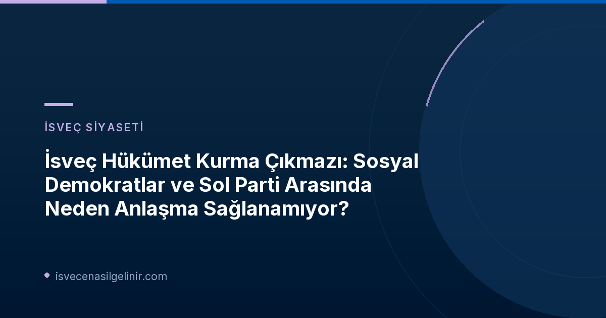

İsveç'te Hükümet Kurma Sürecindeki Gerginlik Tırmanıyor
2026 genel seçimlerinin ardından İsveç'te yeni bir hükümet kurma çabaları, Sosyal Demokratlar ve Sol Parti arasında ciddi bir anlaşmazlığa sahne oluyor. SVT Nyheter'in son haberine göre, Sosyal Demokratların önde gelen isimlerinden Ardalan Shekarabi, Sol Parti'ye "prestiji bırakma" çağrısı yaparken, Sol Parti'nin üst düzey yetkilisi Ida Gabrielsson ise bakanlık koltuğu taleplerinden vazgeçmek için "büyük adımlar" gerektiğini belirtiyor.Sosyal Demokratların "Start Paketi" ve Reddedilen Teklif
Sosyal Demokratların lideri Magdalena Andersson, Sol Parti'ye siyasi reformlar içeren ancak bakanlık pozisyonları içermeyen bir "start paketi" sundu. Bu paket, aşağıdaki anahtar alanlarda reformlar öngörüyor:Sosyal Demokratların "Start Paketi" Teklifinin Ana Unsurları
- Daha düşük konut maliyetleri için bir paket
- Kapsamlı bir diş sağlığı reformu
- Güçlendirilmiş hastalık ve aktivite ödeneği
- Hükümet bürosunda yüksek pozisyonlar (bakanlık dışı)
- Kırmızı-yeşil partilerin "birbirine daha yakınlaşmasını" araştıracak bir çalışma grubu
- İki yıl sonra işbirliği biçimlerinin değerlendirilmesi
Sol Parti'nin "Büyük Adımlar" Talepleri
Sol Parti, hükümette yer almak ve bakanlık taleplerinden vazgeçmek için çok daha kapsamlı reformlar talep ediyor. Ida Gabrielsson'a göre, bu "büyük adımlar" şunları içermeli:| Talep Edilen Reform Alanı | Detay |
|---|---|
| Milyarder Vergisi | Yeni bir milyarder vergisinin getirilmesi. |
| Refahta Kârın Kaldırılması | Refah sektöründeki kâr amacının tamamen ortadan kaldırılması. |
| Genel Çalışma Süresi Kısaltması | Ülke genelinde çalışma saatlerinin kısaltılması. |
Shekarabi'den Sol Parti'ye Çağrı: "Prestiji Bırakın"
Sosyal Demokratların hükümet kurma sürecindeki kilit isimlerinden Ardalan Shekarabi, yaklaşık 70 gündür süren seçim sonrası dönemde Sol Parti ile somut siyasi konularda herhangi bir müzakerenin mümkün olmadığını belirtiyor. Shekarabi, "Siyasi çalışma, müzakerelere gelmeyi gerektirir. O zaman Sol Parti prestiji bırakmalı ve müzakerelere gelmeli," ifadelerini kullandı. Sosyal Demokratlar olarak müzakerelere her zaman açık olduklarını ancak Sol Parti'nin "bakanlık koltuğu almadıkça müzakerelere oturmayız" yanıtını verdiğini dile getirdi. Shekarabi ayrıca, Sol Parti için bakanlık kapısının mevcut görev süresi boyunca kapalı olduğunu net bir şekilde vurguladı. Ancak, hükümet bürosunda müsteşarlık ve diğer etki sahibi pozisyonlar için fırsatların devam ettiğini ekledi.Görüşmelerin Geleceği ve Siyasi İstikrar
Bu siyasi kilitlenme, İsveç'in hükümet kurma sürecini karmaşıklaştırmaya devam ediyor. Sol Parti'nin bakanlık ısrarı ve Sosyal Demokratların net duruşu, partiler arası diyaloğu zorlaştırıyor. Bu durum, İsveç siyasetinde istikrarsızlık endişelerini artırırken, diğer partilerin pozisyonlarını da etkileyebilir. Tarafların uzlaşma yoluna gidip gitmeyeceği veya bu kilitlenmenin İsveç siyasetini ne yöne sürükleyeceği önümüzdeki günlerde daha netleşecektir. Ancak şu an için, İsveç'in hükümet kurma süreci, önemli bir siyasi meydan okuma olarak varlığını sürdürüyor.Referanslar
- SVT Nyheter Inrikes: S-toppens svar till V: ”Släpp prestigen”
İsveç'te Yaşam ve Göçmenlik Hakkında Daha Fazla Bilgi Edinin
İsveç'teki siyasi gelişmelerin yanı sıra, İsveç'te yaşama, çalışma veya eğitim olanakları hakkında güncel ve güvenilir bilgilere ulaşmak için kaynaklarımızı inceleyin.